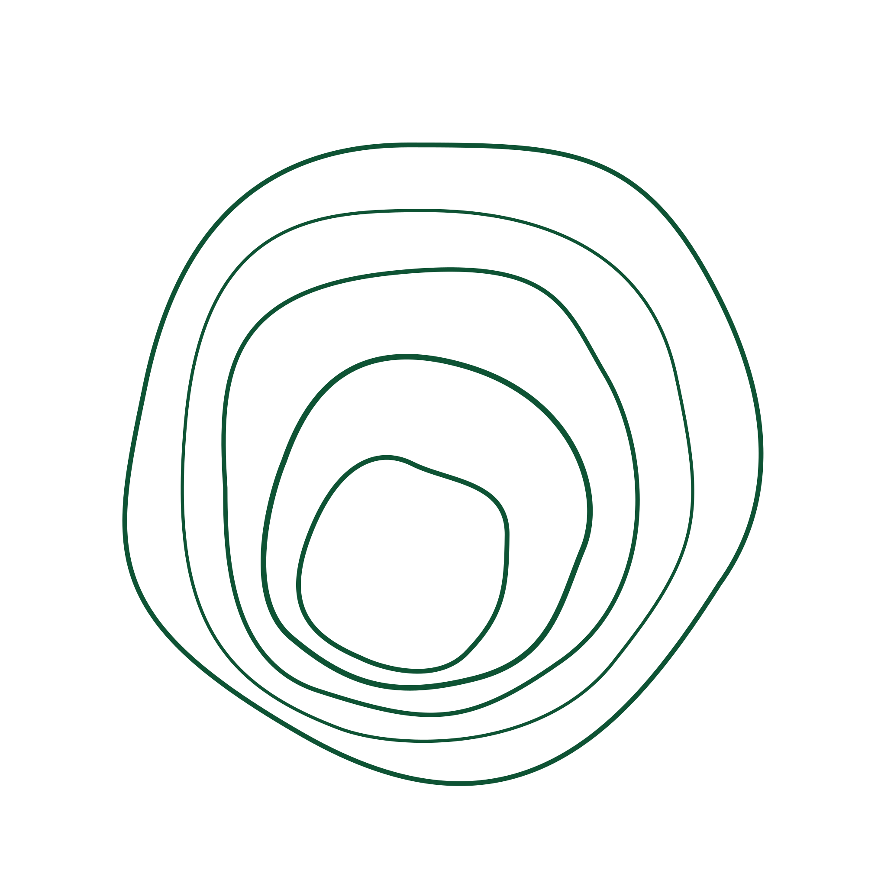

Rooted in
craft, built
to endure
Seven AI agents with structured handoffs and quality gates at every phase. Totara turns your coding assistant into a full development team.
Software that
ships right
Named after the Totara tree — a native New Zealand podocarp that lives over 1,000 years. Like its namesake, software built with this team is rooted in craft, built to endure.
No half-deliverables pass downstream. Every phase has a fitness gate. Every handoff is verified. Every decision is documented.
Six phases.
Zero shortcuts.
Requirements
Marty — Product Manager
EARS notation. Testable acceptance criteria. Explicit scope boundaries.
UX Design
Dieter — Designer
Every screen, every state. Default, loading, empty, error, success, partial.
Architecture
Margaret + Charity
Components, data model, API surface, cross-cutting concerns, security review.
Implementation
Margaret — Developer
Boring, correct, maintainable code. Ships software that works when it matters.
Testing
James — Tester
Every AC has a passing test. Every design state exercised. No open Sev1/Sev2.
Release
Joint sign-off
SLO dashboards live. Alerts tested. Rollback rehearsed. Security scans clean.
What you get
Structured Handoffs
Every phase has a fitness gate. No half-deliverables pass downstream. The Delivery Lead verifies each transition with specific criteria.
Issue Triage
Bugs get routed by root cause, not symptom. A comprehensive taxonomy maps every issue type to the right owner with clear accountability.
Living Documentation
A product-level living spec aggregates shipped features. Tech debt is tracked in a register. Nothing hides in TODO comments.
Quality Gates
Each agent has a quality bar. The Tester and DevOps jointly own the release gate. No shortcuts to production, ever.
Capability Audits
Before implementation starts, the Talent Manager checks if the team has the skills the spec demands. Gaps get filled proactively.
Continuous Learning
User feedback and recurring issues become permanent team improvements — persona edits, skill docs, convention updates.
Seven agents.
Named after pioneers.
Each agent carries deep expertise and strong opinions about their craft. They collaborate through structured handoffs, not chaos.
Product Manager
Owns the “what” and “why.” Produces requirements in EARS notation with testable acceptance criteria.
UI/UX Designer
Owns user flows, interaction design, visual design, and accessibility. Designs all states — not just the happy path.
Fullstack Developer
Stack-agnostic. Writes boring, correct, maintainable code. Ships software that works when it matters most.
DevOps Engineer
Cloud-agnostic. Owns infrastructure, CI/CD, observability, security, reliability, and cost.
Tester
Owns test strategy, automation, exploratory testing, and release validation. The last line of defense.
Delivery Lead
Drives handoffs, gates each phase, triages issues to the right role. Calm orchestration under pressure.
Talent Manager
Audits team capability against specs, fills gaps with skill docs, and turns feedback into permanent improvements.
Two platforms.
Same team.
Install from GitHub
Open Kiro → Powers panel → “Add power from GitHub”
https://github.com/nickharre/totara
Or clone locally
Clone the repo, then point Kiro at the Power folder:
git clone https://github.com/nickharre/totara.git
Then: Kiro → Powers → “Add power from Local Path”
Start building
Mention keywords like “requirements,” “design,” or “triage” and Totara activates. Or invoke agents directly.
Clone the repo
git clone https://github.com/nickharre/totara.git
Copy the config
Copy the .claude folder into your project:
cp -r totara/claude-code/.claude your-project/.claude
Start a session
Open Claude Code. The CLAUDE.md loads automatically. Invoke roles with “act as Gene” or “act as Marty.”
claude
# "Act as Gene and kick off a new feature"